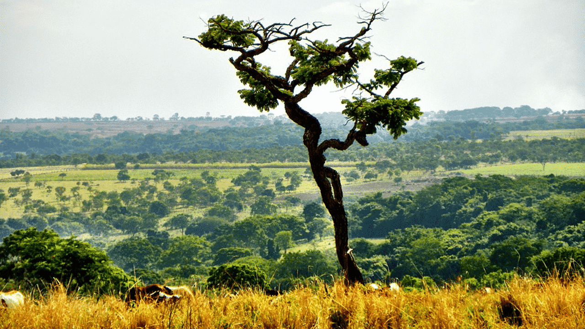
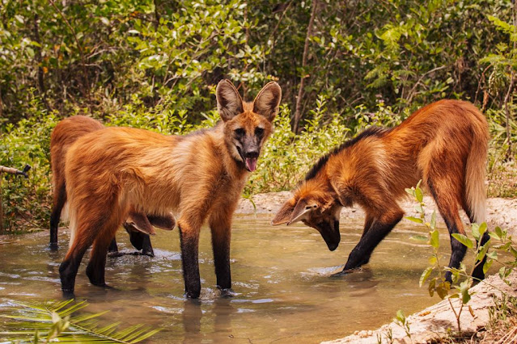
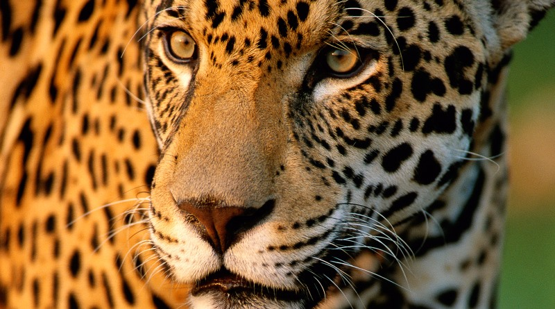

O bioma Cerrado é considerado o segundo maior bioma brasileiro em extensão e a mais rica savana do mundo em biodiversidade. O Cerrado brasileiro abrange os estados: Amapá, Maranhão, Piauí, Rondônia, Distrito Federal, Goiás, Mato Grosso, Mato Grosso do Sul, Minas Gerais, São Paulo, Tocantins, Bahia. Localiza-se em três das maiores bacias hidrográficas da América do Sul, (Tocantins-Araguaia, São Francisco e Prata) o que, de certa maneira, favorece sua biodiversidade. Além disso, o Cerrado desempenha um papel crucial na regulação do clima e na manutenção dos recursos hídricos, sendo fundamental para a agricultura e a pecuária. A preservação deste bioma é essencial para garantir a sustentabilidade ambiental e a qualidade de vida das futuras gerações.
clima predominante no cerrado é tropical sazonal caracterizado por um clima quente com períodos chuvosos e de seca.A vegetação é, em sua maior parte, semelhante à de savana, com árvores baixas, esparsas, troncos retorcidos, folhas grossas e raízes longas; gramíneas e arbustos.
Por ser muito extenso, o cerrado, dependendo de sua localização, apresenta mudanças no seu ecossistema.Nesse caso, os ecossistemas presentes no cerrado podem ser classificados como: Cerradão, Cerrado Campestre, Cerrado rupestre, Cerrado típico, Campo limpo de cerrado, Cerrado de matas, Cerrado de várzeas, Cerrado veredas.
O Cerrado é considerado a maior savana do mundo em biodiversidade e compreende grande parte do território brasileiro, uma área de 2 milhões de km².Por isso, o cerrado e os ecossistemas que o compõem possuem uma rica fauna e flora, sendo o habitat de muitas espécies de animais. Este é também um dos motivos deste bioma ser um dos mais afetados pelo tráfico de animais.
Jiboia, cascavel, jararaca, lagarto teiú, ema, seriema, curicaca, urubu comum, urubu caçador, urubu-rei, arara, tucano, papagaios, gaviões, tatu-peba, tatu-galinha, tatu-canastra, tatu-de-rabo-mole, anta, ariranha, gambá, cervo, onça-pintada, preá, cachorro-vinagre, lobo-guará, lontra, tamanduá-bandeira, tamanduá-mirim, gato-palheiro, gato-mourisco veado-mateiro, cachorro-do-mato, macaco-prego, quati, cateto, queixada, porco-espinho, capivara, tapiti, jaritataca.Com aproximadamente 10.000 espécies diferentes, na flora presente no cerrado, encontram-se: babaçu, murici, mangaba, pequi, buriti, cagaita, baru, jerivá, gueroba, jatobá, macaúba, cajuzinho-do-cerrado, barbatimão, pau-santo, gabiroba, pequizeiro, araçá, sucupira, pau-terra, catuaba, indaiá, capim-flecha, matas ciliares.
